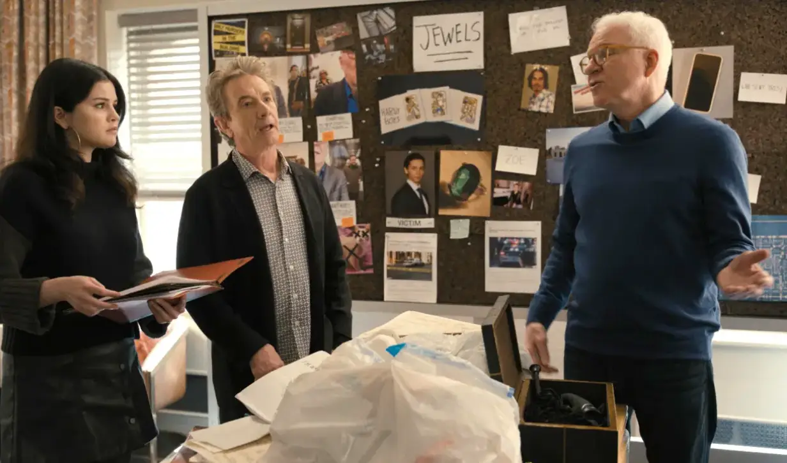

Unravel the Mystery
Behind every locked door in the Arconia lies a clue, a twist, or a suspect…

The Mystery Begins
Only Murders in the Building opens with three strangers: Charles, Oliver, and Mabel, living isolated lives inside the Arconia, a grand but secretive Upper West Side building.
When a sudden evacuation forces everyone into the street, the trio discovers they share a fascination with true‐crime podcasts, sparking an unexpected connection that pulls them into a mystery unfolding right under their noses.
How it Started
We meet Charles, a faded TV detective actor, Oliver, a struggling theater director, and Mabel, a young woman renovating her aunt's apartment. The three strangers meet during a fire alarm and bond over their shared love of true crime podcasts.
When they discover that fellow Arconia resident Tim Kono has died, police quickly rule it a suicide. But Charles, Oliver, and Mabel aren't convinced and suspect murder.
The Secret
As the investigation deepens, Mabel reveals that she knew Tim from a childhood friend group linked to another suspicious death years earlier.
This revelation casts Mabel in a new light for Charles and Oliver, who begin to question how much she has truly shared with them, Mabel's reluctance to disclose everything fuels tension, forcing them to confront whether they can trust each other.
The Killer Revealed
Their amateur sleuthing leads them through a maze of clues, eccentric neighbours, and misleading suspects. Eventually, the threads converge around a hidden black‐market jewelry scheme within the building, exposing a darker motive.
The truth lands shockingly close to home when they uncover that Jan, Charles' new girlfriend, murdered Tim in a jealous rage and staged the scene to look like suicide.
The Cliffhanger Hook
With Tim's case solved, the trio enjoys a brief moment of fame from their podcast... until another murder rocks the Arconia. Mabel is found standing over the body of a fellow resident, instantly casting suspicion on all three podcasters.
The revelation strains their fragile trust, forcing Charles and Oliver to question how much Mabel has kept from them as a new mystery begins to take shape.